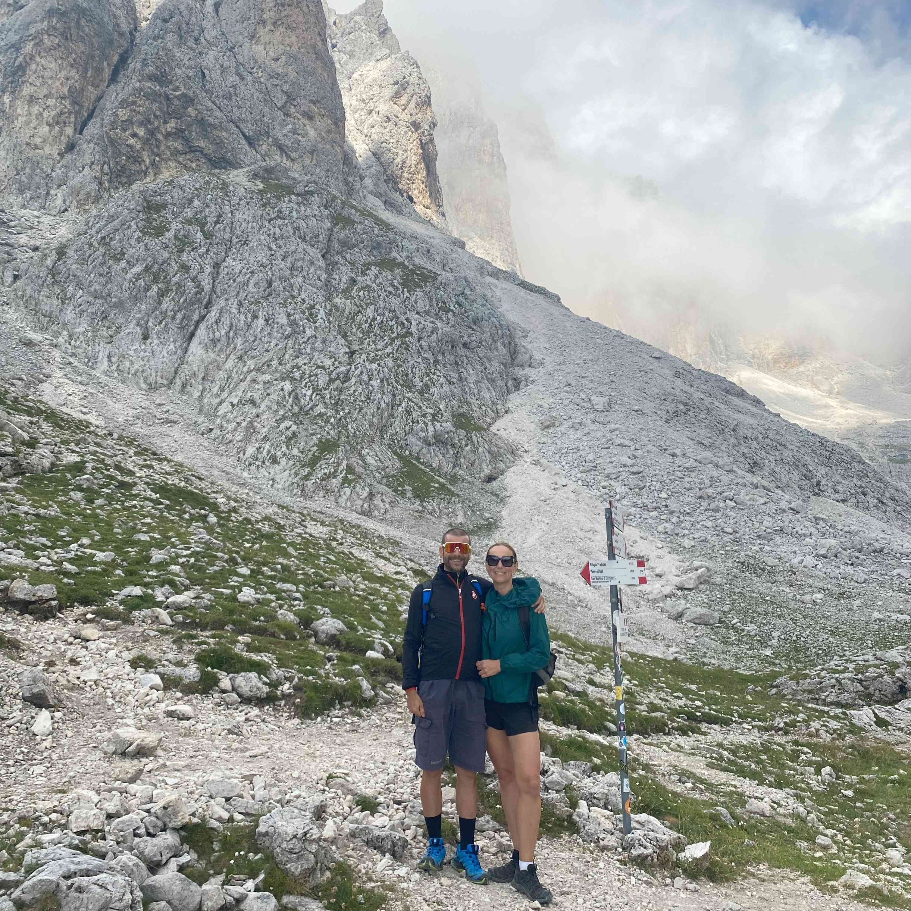
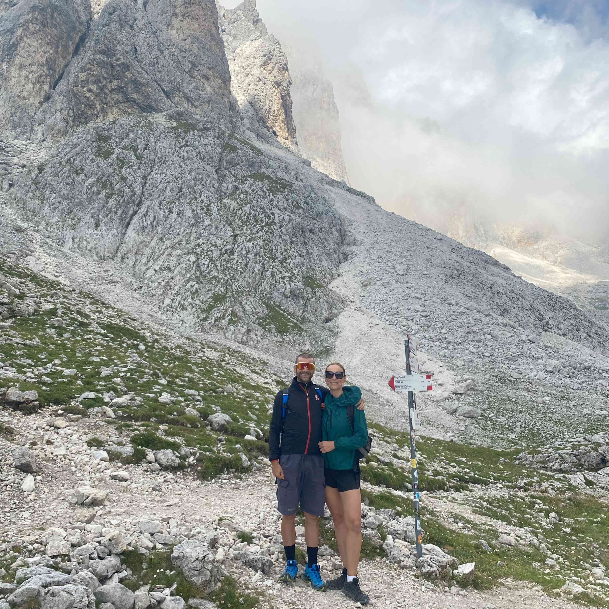

Setting off on the Cant del Gal to Rifugio Pradidali hike is like auditioning for a role in a mountain adventure film—minus the stunt doubles and with a lot more huffing and puffing. This trail offers a delightful mix of serene forests, challenging ascents, and panoramic vistas that make every drop of sweat worth it
Trail Overview:
- Distance: Approximately 5.49 kilometers (about 3.41 miles)
- Elevation Gain: Around 1,149 meters (approximately 3,770 feet)
- Highest Elevation: 2,330 meters (7,644 feet)
- Difficulty: Difficult
- Estimated Time: Approximately 3 hours, depending on your pace and the number of selfie stops
Trail Highlights:
- Cant del Gal (Starting Point): Nestled in Val Canali at 1,175 meters, this charming spot is your gateway to the adventure. Before setting off, take a moment to enjoy the tranquil surroundings and perhaps question your life choices—like why you didn't opt for a beach vacation.
- The Ascent via Trail 709: From Cant del Gal, you'll embark on trail number 709, which leads you through lush forests and gradually transitions to rocky terrains. The path is well-marked, but be prepared for some steep sections that will have your calves singing opera.
- Malga Canali: Along the way, you'll pass Malga Canali, a picturesque alpine hut that's perfect for a short break. It's an excellent spot to catch your breath and perhaps indulge in some local cheese—because nothing fuels a hike like dairy.
- Rifugio Pradidali: Perched at 2,278 meters, this historic mountain hut is your destination. Surrounded by towering peaks like Cima Canali and Sass Maor, the rifugio offers breathtaking views that make the challenging ascent worthwhile. Plus, their hearty meals are the stuff of legends—or at least, hungry hikers' dreams.
Trail Navigation:
- Start at Cant del Gal (1,175 m) and follow Trail 709 all the way to Rifugio Pradidali (2,278 m).
- The path climbs steadily: first through forest, then over rocky terrain.
- Along the way, you’ll pass Malga Canali (perfect for a break), and just before the rifugio, Trail 711 branches off — ignore it unless you want bonus adventure.
That’s it: Trail 709 up, Trail 709 down (unless your legs vote otherwise).